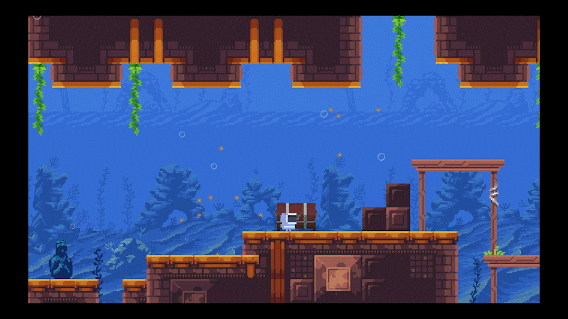

RoBoo
Link to game page: https://dame-dane.itch.io/roboo
Link to web build (full screen recommended): https://kawasemii.github.io/eecs494-roboo/
Roboo is a 2D puzzle platformer where you play the role of a cute robot exploring the mysterious underwater world in search of treasure. With the superpower to generate bubbles on various targets, you can evade obstacles and foes and ultimately locate the coveted prize. Come and join this thrilling adventure!
Controls
- Movement: WASD or arrow keys (↑↓←→)
- Jump: D or ↑
- Generate bubble: Mouse
- Load checkpoint: R
- Restart the entire level: T
- Pause menu: Esc
Credits
Escaper Studio
- Anhua Wu
- Beining Zhou
- Jie Ji
- Xiaoyan Bai
Special thanks to:
- Paul Emery
- Yuchen Wu
My Contributions:
- Player Controls
- Game mechanic design and implementation (bricks, lasers, pushbuttons, waterflows and bubbles)
- Laser level design and implementation (level 3, 6, 7)
- UI menus (main menu, pause menu, death panel)
- Checkpoint system
- Audio management
Technology used:
C# and Unity.